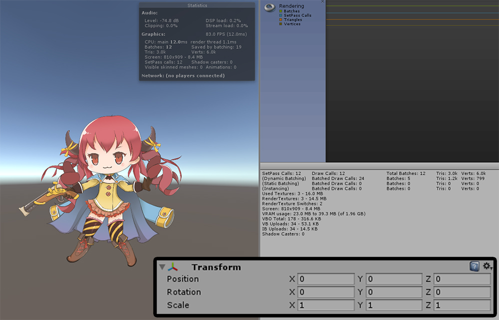
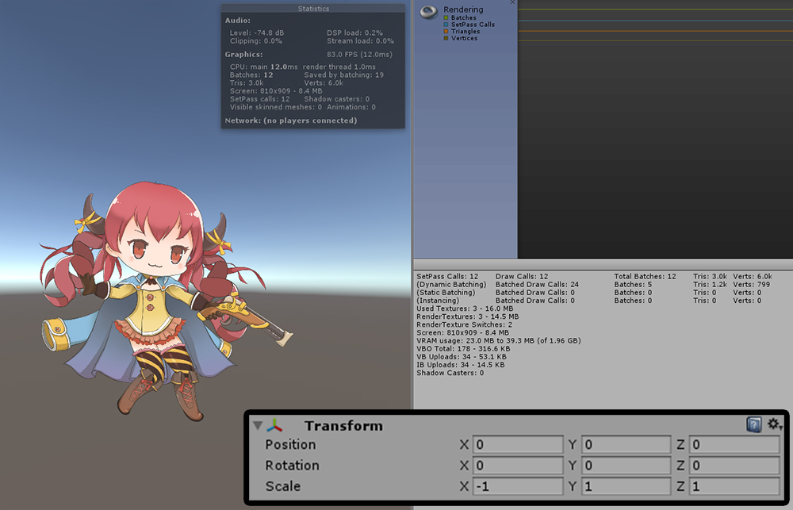

AnyPortrait > マニュアル > 反転スケールとドローコール
反転スケールとドローコール
1.1.6
完成された文字の左右、または上下を反転しようとする場合には、一般的にTransformのScaleの値の符号を反転します。
しかし、このようにScaleの値を反転することは「Drawcall」が増加する原因となります。
AnyPortraitの1.1.6バージョンでサイズを反転してもDrawcallが増加しないように改善しました。
下のスクリーンショットを通しサイズ反転とDrawcallの関係を確認することができます。

サイズが反転されていない状態です。
2つ以上のAtlasをとRender Textureを使用するので、Drawcallは12で測定されます。

ScaleのX値を-1に反転させた状態です。
キャラクターの左右が反転されてレンダリングがされます。
「Drawcall Batching」が解除され、Drawcallが増加するのが一般的です。
しかし、ここではサイズが反転された状態でもDrawcallが同様に12で測定されます。

ScaleのY値を反転してもDrawcallは12で同じままになります。
現在のゲームを作成するときに、Drawcallの最適化を心配せずにサイズ反転をすると良いです。